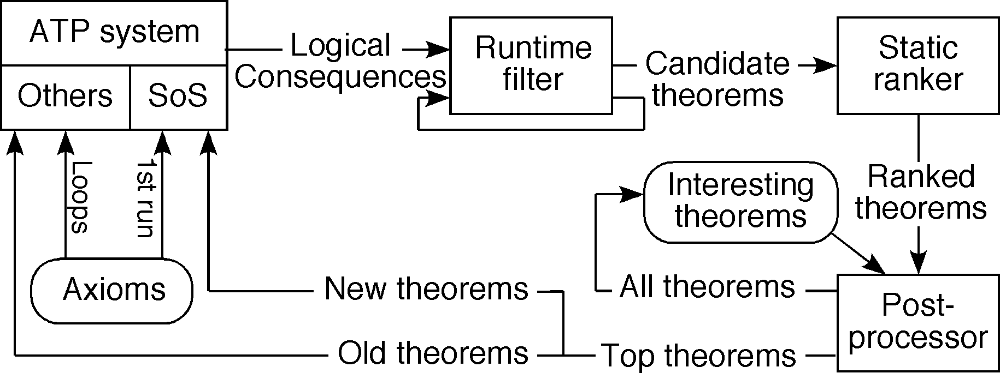
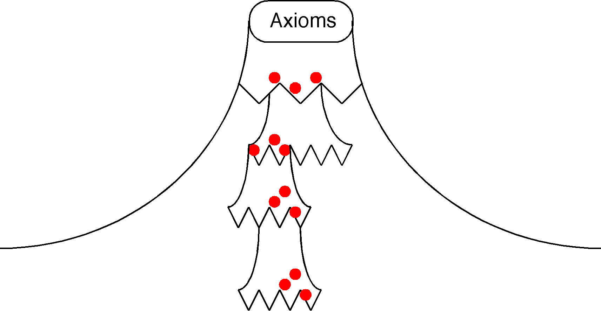

Background and Aims

A Large Search Space

Set-of-Support
- All formulae descend from SoS
- Axioms in first SoS
Nothing else
- New interesting theorems in subsequent SoS's
Axioms + old interesting theorems in non-SoS
- Produces focussed search deeper into search space